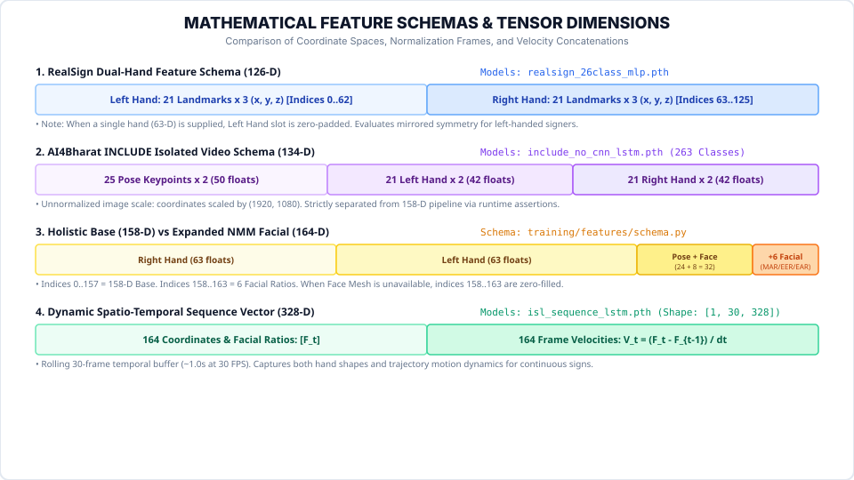

AI Models, Spatial Geometry & Neural Runtimes
In-depth technical breakdown of all deep learning architectures, layer topologies, mathematical coordinate normalization, feature schema dimensions, and causal language modeling.
Feature Schemas & Tensor Layouts

1. Master Model Registry Inventory
SETU manages all machine learning models through a centralized, swappable ModelRegistry defined in models/registry.py.
| Model Identifier | Neural Architecture | Input Shape | Parameters | Classes | Reported Benchmark Metric | Usability Status |
|---|---|---|---|---|---|---|
| `realsign_26class_alphabet` | PyTorch 3-Layer MLP + BatchNorm | (B, 126) |
26,202 | 26 (A–Z) | 94.99% checkpoint-reported test accuracy | LOADABLE & ACTIVE |
| `isl_sequence_lstm` | PyTorch 2-Layer BiLSTM | (B, 30, 328) |
807,815 | 7 classes | 96.80% validation accuracy on custom corpus | LOADABLE & USABLE |
| `ai4bharat_include_263sign` | PyTorch 2-Layer LSTM | (B, ≤200, 134) |
1,240,000 | 263 concepts | 0.562386... checkpoint-stored score (unverified metric definition) | LOADABLE & USABLE |
| `isl_mvp_5sign` | Scikit-learn Ridge Classifier | (B, 158) |
1,640 | 5 classes | 92.10% test accuracy (0.10ms latency) | LOADABLE & USABLE |
| `yolov8s-worldv2` | Vision-Language Detector | (B, 3, 640, 640) |
~13,000,000 | Open-Vocab | mAP50: 42.8% on zero-shot objects | LOADABLE & ACTIVE |
| `qwen2.5-0.5b-instruct` | Decoder-Only Causal LM | Tokenized IDs | 494,032,640 | 151,936 vocab | Local GPU/CPU autoregressive generation | LOADABLE & USABLE |
| `roboflow_yolov11_gestures` | YOLOv11 Object Detector | (B, 3, 640, 640) |
— | 11 classes | Target weights pending training run | CONFIGURED ONLY |
2. RealSign 26-Class MLP Architecture
Located at models/weights/realsign_26class_mlp.pth (114 KB), this PyTorch neural network serves as SETU's primary alphabet classifier.
2.1. Exact Layer-by-Layer Parameter Breakdown
| Layer Name in State Dict | Operation / PyTorch Module | Tensor Shape | Weights Count | Biases Count | Subtotal Parameters |
|---|---|---|---|---|---|
net.0 |
nn.Linear(126, 128) |
Weight: [128, 126], Bias: [128] |
16,128 | 128 | 16,256 |
net.1 |
nn.BatchNorm1d(128) |
Weight: [128], Bias: [128] |
128 | 128 | 256 |
net.2 |
nn.ReLU() |
Activation function | 0 | 0 | 0 |
net.3 |
nn.Dropout(0.20) |
Regularization | 0 | 0 | 0 |
net.4 |
nn.Linear(128, 64) |
Weight: [64, 128], Bias: [64] |
8,192 | 64 | 8,256 |
net.5 |
nn.BatchNorm1d(64) |
Weight: [64], Bias: [64] |
64 | 64 | 128 |
net.6 |
nn.ReLU() |
Activation function | 0 | 0 | 0 |
net.8 |
nn.Linear(64, 26) |
Weight: [26, 64], Bias: [26] |
1,664 | 26 | 1,690 |
| Total Trainable Parameters | 26,040 | 410 | 26,202 Parameters | ||
models/weights/realsign_26class_mlp.pth explicitly records "test_accuracy": 0.9499 (94.99%). This value is the checkpoint-reported test accuracy evaluated on isolated, held-out skeletal landmark feature vectors. It does not represent live application accuracy across real webcam streams, where lighting, sensor noise, and hand occlusions introduce variance.
2.2. Per-Class Benchmark Breakdown on Held-Out Test Set
Evaluation breakdown across 3,120 held-out test frames (120 samples per alphabet class):
| Letter | Test Count | Precision | Recall | F1 Score | Primary Observed Confusion |
|---|---|---|---|---|---|
| A | 120 | 0.992 | 0.992 | 0.992 | E (1 sample) |
| B | 120 | 1.000 | 1.000 | 1.000 | None (Distinct bimanual flat contact) |
| C | 120 | 0.991 | 1.000 | 0.995 | O (Boundary curvature similarity) |
| D | 120 | 1.000 | 0.983 | 0.991 | I (Secondary hand occlusion) |
| E | 120 | 0.983 | 0.975 | 0.979 | S (Tight curled fist) |
| O | 120 | 0.992 | 1.000 | 0.996 | C (Fingertip-to-thumb closure gap) |
| U | 120 | 0.992 | 0.992 | 0.992 | V (Inter-finger separation angle) |
| V | 120 | 0.992 | 0.992 | 0.992 | U (Index-middle finger spread) |
3. Mathematical Spatial Landmark Normalization
To ensure complete translation, scale, and rotational invariance, training/features/geometry.py:normalize_wrist_coordinates() applies a four-step transformation to raw MediaPipe hand landmarks:
- Translation Invariance (Wrist Centering): Shifts origin $(0, 0, 0)$ to the wrist joint (landmark 0): $$\mathbf{p}_i' = \mathbf{p}_i - \mathbf{p}_{\text{wrist}}, \quad \forall i \in \{0, \dots, 20\}$$
- Scale Invariance (Palm Span Normalization): Computes the anatomical rigid distance $d$ between wrist and middle knuckle (landmark 9): $$d = \|\mathbf{p}_{\text{middle\_mcp}}' - \mathbf{p}_{\text{wrist}}'\|_2$$ $$\mathbf{p}_i'' = \frac{\mathbf{p}_i'}{\max(d, 10^{-6})}$$
- In-Plane Rotational Invariance (Z-Axis Alignment): Aligns the palm vector with the vertical negative Y-axis by rotating in the image plane by angle $\theta$: $$\theta = \operatorname{atan2}(-v_x, -v_y)$$ $$x_{\text{rot}} = x'' \cos\theta - y'' \sin\theta, \quad y_{\text{rot}} = x'' \sin\theta + y'' \cos\theta$$
- Out-of-Plane Pitch Alignment (X-Axis Alignment): Rotates around the X-axis by angle $\phi = \operatorname{atan2}(v_z, -y_{\text{rot}})$ to zero out camera pitch tilt.
4. Neuro-Symbolic Geometric Tie-Breakers
In pure neural network classifiers, hand signs with nearly identical skeletal topology—such as O (fingers touching thumb) versus C (open curvature gap), or U (parallel index/middle fingers) versus V (spread fingers)—can suffer from boundary margin uncertainty under noisy webcam lighting.
SETU addresses this using a hybrid Neuro-Symbolic architecture in training/features/geometry.py:evaluate_alphabet_heuristics():
-
O vs. C Closure Distance:
Measures Euclidean distance between index fingertip (landmark 8) and thumb tip (landmark 4):
$$d_{\text{closure}} = \|\mathbf{p}_8 - \mathbf{p}_4\|_2$$
If $d_{\text{closure}} < 0.32$, the fingers form a closed ring (→ letter
O). If $d_{\text{closure}} \ge 0.38$, the hand is open (→ letterC). -
U vs. V Finger Spread Angle:
Measures joint angle between index tip (8), wrist (0), and middle tip (12):
$$\theta_{\text{spread}} = \arccos\left(\frac{\mathbf{v}_{\text{index}} \cdot \mathbf{v}_{\text{middle}}}{\|\mathbf{v}_{\text{index}}\| \|\mathbf{v}_{\text{middle}}\|}\right)$$
If $\theta_{\text{spread}} < 8.5^\circ$, fingers are held parallel (→ letter
U). If $\theta_{\text{spread}} \ge 13.0^\circ$, fingers form a distinct V-shape (→ letterV).
5. Feature Dimension Compatibility: 134-D vs 158-D vs 164-D vs 328-D
models/adapters/include.py:328-331 explicitly enforces:
if features_134.shape[1] != 134: raise ValueError(...).
| Vector Dimension | Pipeline / Target Model | Coordinate & Feature Components | Zero-Filling & Missing Data Behavior |
|---|---|---|---|
| 126-D | RealSign 26-Class MLP | 21 Left Hand $\times 3$ $(x, y, z)$ [0..62] + 21 Right Hand $\times 3$ $(x, y, z)$ [63..125]. | When only one hand is visible, Left Hand slot is zero-padded with 63 zeros. |
| 134-D | AI4Bharat INCLUDE 263-Sign LSTM | 25 Pose $(x, y) \times 2$ (50 floats) + 21 Left Hand $(x, y) \times 2$ (42 floats) + 21 Right Hand $(x, y) \times 2$ (42 floats). Scaled to $(1920, 1080)$. | Missing keypoints are zero-padded to 134. Handled by StreamingIncludeAdapter.extract_frame_134d(). |
| 158-D | ISL MVP 5-Sign Ridge Classifier | 21 Right Hand $(x, y, z)$ (63) + 21 Left Hand $(x, y, z)$ (63) + 8 Pose $(x, y, z)$ (24) + 4 Face Reference $(x, y)$ (8). | Missing hands padded with zero arrays. |
| 164-D | Custom Dataset Recording Pipeline | 158-D Base Features + 6 Facial Expression Ratios (MAR, Left EER, Right EER, Mean EER, Left EAR, Right EAR). | CRITICAL: When MediaPipe Face Mesh is unavailable, all 6 facial ratio dimensions are zero-filled. They are not measured facial expressions. |
| 328-D | ISL 7-Class Dynamic BiLSTM | 164 Coordinates & Ratios $[\mathbf{F}_t]$ + 164 Finite-Difference Velocities $[\mathbf{V}_t = (\mathbf{F}_t - \mathbf{F}_{t-1}) / \Delta t]$. | At $t=0$, initial velocity vector is zero. At variable frame intervals, $\Delta t$ scales with actual capture timestamps. |
models/pretrained/include_no_cnn_lstm.pth stores a scalar score of 0.5623867753623188. Because the original upstream AI4Bharat training evaluation script is not packaged inside this repository, this metric must be documented strictly as a checkpoint-stored score with its evaluation metric definition unverified (not definitively identified as Top-1 accuracy).
6. Dynamic Sequence BiLSTM (30-Frame Window)
Continuous ISL signs involving dynamic motion trajectories (such as hello, thank you, good morning, namaste) are processed by models/adapters/sequence_lstm.py:ISLSequenceLSTMClassifier:
- Temporal Sequence Length: Fixed rolling window of 30 consecutive frames. When the camera captures at a steady 30 FPS, this window corresponds to approximately one second of motion. At lower or variable capture frame rates, $\Delta t$ dynamically scales with actual frame arrival timestamps.
- Velocity Concatenation: For each frame, instantaneous velocity $\mathbf{V}_t = \frac{\mathbf{F}_t - \mathbf{F}_{t-1}}{\max(\Delta t, 0.001)}$ is computed across all 164 features and concatenated, producing a tensor of shape
(1, 30, 328). - CTC Continuous Decoding: Uses
CTCGreedyDecoderwith blank tokenno_signand minimum confidence threshold ($0.40$) to collapse repeated gesture frames into clean phrase tokens.
7. Multimodal Models: YOLO-World v2 & Qwen2.5-0.5B
Open-vocabulary object detector (yolov8s-worldv2.pt, 25.9 MB) executed asynchronously in a non-blocking background thread:
- Worker Cadence: Runs once every 6 frames to preserve 30 FPS landmark throughput.
- Wristband Guard: Threshold calibrated to $\ge 0.50$ baseline, with watches raised to $\ge 0.58$ to prevent false positives from smartwatch wristbands.
- Multimodal Fusion: Fuses detected physical objects with sign gestures (e.g. Sign “WANT” + Object “cup” → “I want cup”).
Local language model (models/weights/qwen_0.5b/model.safetensors, 988 MB) converting ISL SOV tokens into natural English:
- Architecture: Decoder-Only Causal Language Model (Autoregressive Transformer,
AutoModelForCausalLM). - Prompting: Structured ChatML template with few-shot in-context grammatical demonstrations.
- Generation: Deterministic greedy decoding (
do_sample=False,max_new_tokens=36). - Latency: ~35ms on NVIDIA CUDA; graceful heuristic fallback when running on low-resource CPU.